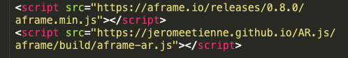
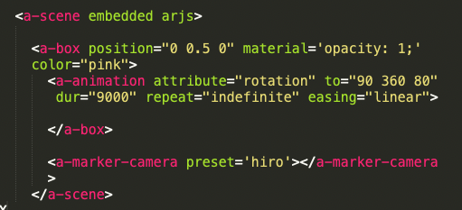

Hello,
This is my Midterm Reflection and Future API Research
Midterm Reflection:
The first half of this course was very eye opening for me in the realm of actually creating visuals that I had previously only seen on advertisements or professionally developed apps, such as interactive clocks or video filters in social media apps.
At first I was quite hesitant and almost scared of coding languages but as we gradually learnt how to make a website and then use open processing to code the visuals I became more confident with messing around in different languages. I also learnt that there is a lot of external help through forums, blog posts and GitHub pages which made me realize that I don’t have to learn or remember everything and that I can always find resources to create whatever I want to. It is only after this realization that I was able to actually have fun with the visuals that I was creating and push myself to create more complex and intricate patterns.
I think I got a little carried away while iterating the visuals and based on the feedback that I received I think I know where to stop next time to finalize and finetune the visual for the presentation. My future direction for this project is to combine music visualization with AR and figure out how I could make my visual more interactive with the user.
API Research:
According to me, an API is a programming interface that allows the user to create interactions between multiple coding languages.
In order for me to combine my music visualizers with augmented reality, the API I chose to work with is s‘AR.js’.
AR.js allows users to assign 2D markers to 3D models of their choice and lets them animate their models using the A-frame library.


.
Image on the left shows the scripts I found which allowed me to load AR.js onto my website.
Image on the right shows the A-frame library code used to load and animate 3d models onto AR.js and assign them to specific markers. In my case it is the HIRO Marker.
Leave